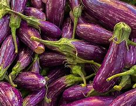

Ingredient Spotlight: Eggplant

Overview
Description: Eggplant, also known as aubergine, is a versatile vegetable used in various cuisines around the world.
Origin: Native to India, eggplants have been cultivated for centuries.
Nutritional Information
| Nutrient |
Amount per 100g |
| Calories |
25 |
| Fat |
0.2g |
| Carbohydrates |
6g |
| Protein |
1g |
Health Benefits:
- Low in calories and rich in fiber.
- Contains antioxidants that may support heart health.
Culinary Uses
Flavor Profile: Eggplant has a mild flavor and spongy texture, absorbing flavors well from other ingredients.
Cooking Methods: It can be grilled, roasted, sautéed, or used in stews.
Common Dishes:
- Eggplant Parmesan
- Ratatouille
- Baba Ganoush
Storage and Preparation Tips
Storage Guidelines: Store in a cool, dark place; refrigerate if cut.
Preparation Tips: Salting before cooking can reduce bitterness and moisture.
Varieties and Substitutes
Types:
- Italian eggplant
- Japanese eggplant
- Chinese eggplant
Substitutes:
Zucchini can be used as a substitute in many recipes.
Fun Facts and Trivia
- Eggplant is a fruit, not a vegetable!
- It comes in many shapes and colors, including purple, white, and green.
FAQs
Q: Is eggplant healthy?
A: Yes, it's low in calories and packed with nutrients.
Q: Can I eat the skin of eggplant?
A: Yes, the skin is edible and contains many nutrients.